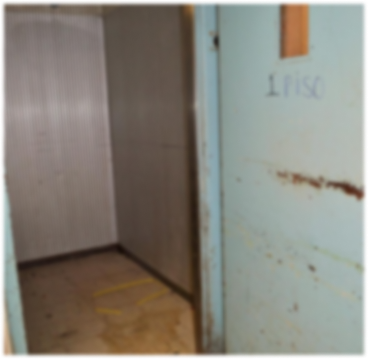
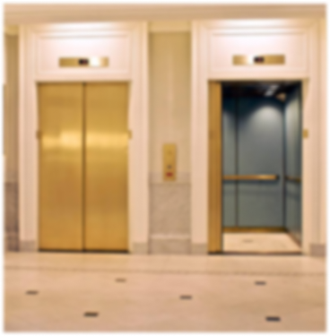

<ion-content fullscreen="true" class="content-background">

  <ion-header>
    <ion-toolbar class="custom-toolbar">
      <ion-title class="header-title">Relevamiento Visual</ion-title>

      <ion-buttons slot="end">
        <ion-button (click)="authService.logOut()">
          <ion-icon name="log-out" color="light" ></ion-icon>
        </ion-button>
      </ion-buttons>

    </ion-toolbar>
  </ion-header>

  <div class="image-container">
    
    <div class="title-container">
      <div class="centered-title" (click)="goToFeas()">Cosas Feas</div>
    </div>
  </div>

  <div class="image-container">
    
    <div class="title-container">
      <div class="centered-title" (click)="goToLindas()">Cosas Lindas</div>
    </div>
  </div>

</ion-content>

<div *ngIf="isLoading" class="spinner-overlay">
  <ion-spinner name="bubbles" ></ion-spinner>
</div>